ニガテ帳
国家試験の過去問(6試験のまとめ版)
間違えた問題だけが残って、2回続けて正解すると消える過去問集。
- 6つの国家試験
- 全問に解説
- iPhone・Android
介護福祉士・看護師・社会福祉士・精神保健福祉士・管理栄養士・理学療法士の国家試験を1本で。本番の予想点と科目ごとの正答率、試験日までの1日の目安も出ます。
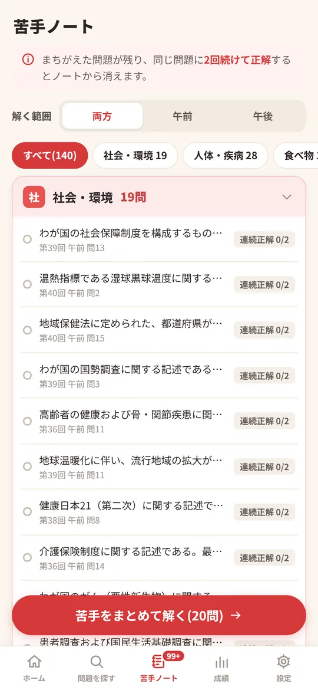
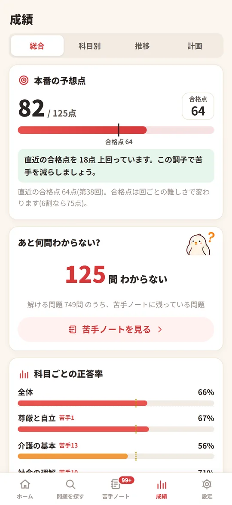
YURU Studio ・ 1人で作っているスマホアプリ
国家試験の過去問「ニガテ帳」、野球の監督ゲーム「DIAMOND NINE」、収支ノート「カチマケ」など。App Store と Google Play で配信しています。
過去問と単語を、苦手だけくり返して覚えるアプリ
国家試験の過去問(6試験のまとめ版)
間違えた問題だけが残って、2回続けて正解すると消える過去問集。
介護福祉士・看護師・社会福祉士・精神保健福祉士・管理栄養士・理学療法士の国家試験を1本で。本番の予想点と科目ごとの正答率、試験日までの1日の目安も出ます。


古文単語・共通テストと大学受験に
古文単語601語を、古典の本文の一文で覚える。
4択とカードでめくって覚える単語帳です。全部の語に作品名つきの例文と訳。試験日から1日に覚える語数を出し、苦手は2回続けて正解すると消えます。
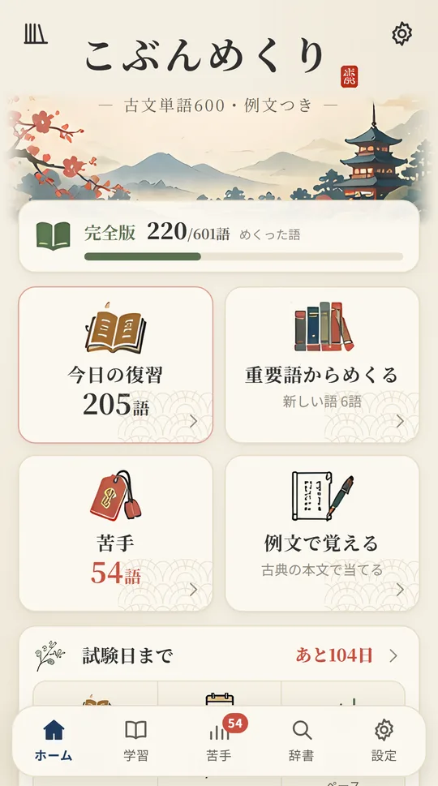
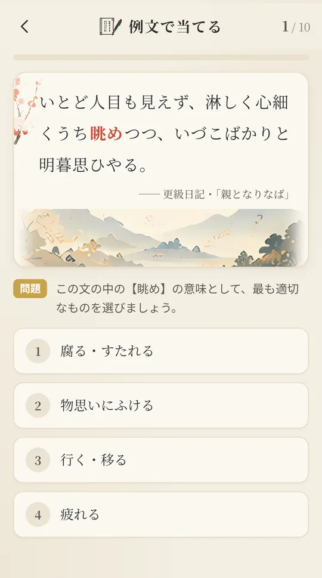
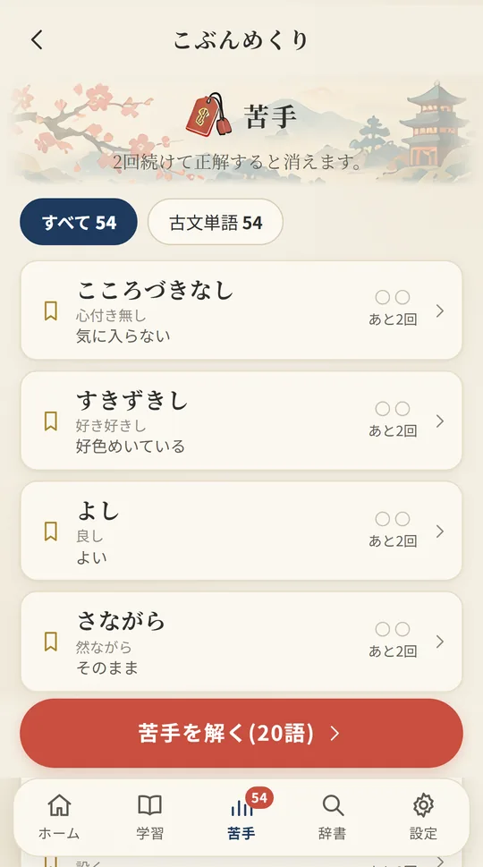
スマホのアプリと、ブラウザですぐ遊べるゲーム
野球の監督シミュレーション
スカウトで選手を集めて、打線を組み、1年を戦い抜く野球の監督ゲーム。
「1年進める」でシーズンをまとめて進めて、順位と成績を見ます。先発・中継ぎ・抑えの役割を決め、今の選手より強い選手が来たら入れ替えます。
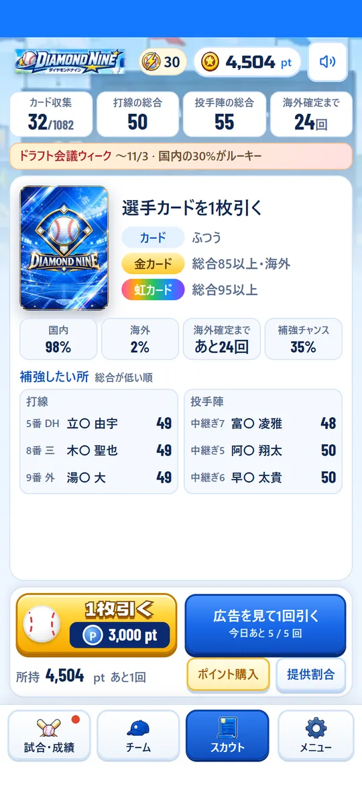
横スクロールのアクション
剣とジャンプで、ほしのかけらを集める旅。
草原やほらあな、ほのおの山、そらの島を進みます。ワールドマップで道を選び、とりでやおばけやしき、ボスのしろへ。ブラウザ版はワールド1を遊べる体験版で、スマホでも PC でも動きます。
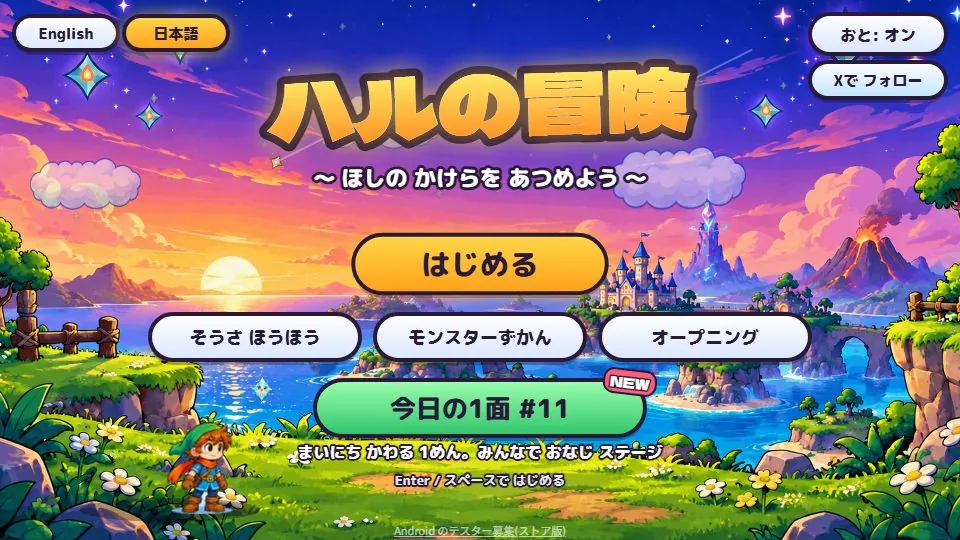
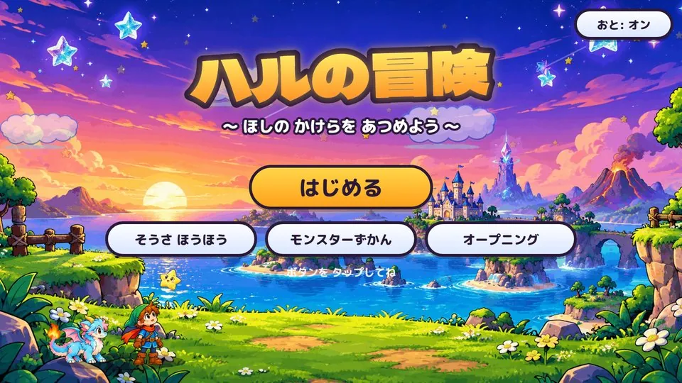
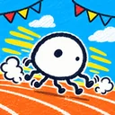
描いた絵が走るかけっこ
指で描いた生き物が、そのままかけっこに出る。
生き物を1匹描くと、その形のとおりに走りだします。どう描けば速いのかは、走らせて確かめてください。CPU のらくがきとのレース、友だちと3人対戦、タイムアタックも。
実況・配信・動画投稿は自由です(収益化も可・連絡不要)。利用規約・配信について ・ プライバシーポリシー
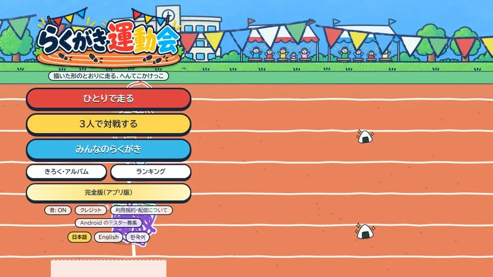
入れるだけ・押すだけで続く、暮らしのアプリ
パチンコ・スロット・競馬などの収支ノート
使った額と戻った額を入れるだけで、月の収支と回収率がひと目で。
パチンコ・スロット・競馬・競輪・ボート・オートを1つのカレンダーに。月の負けの上限を決めておくと、近づいたときにお知らせします。記録はスマホの中だけに残ります。
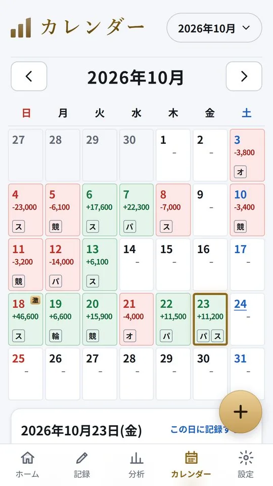
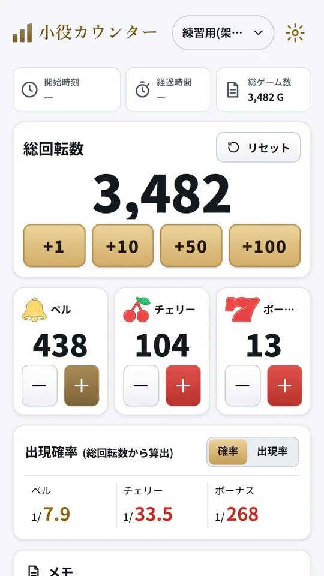
Android 版のテストを終えて、Google Play での公開に向けて準備をしています。
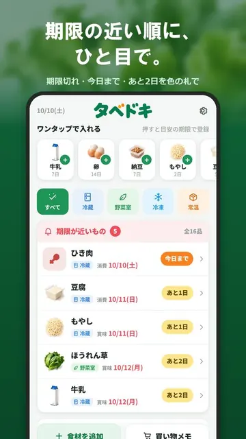
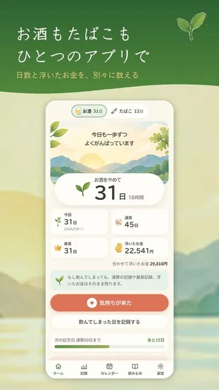
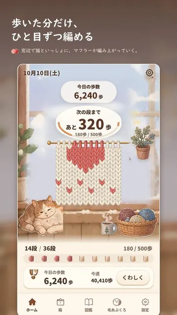
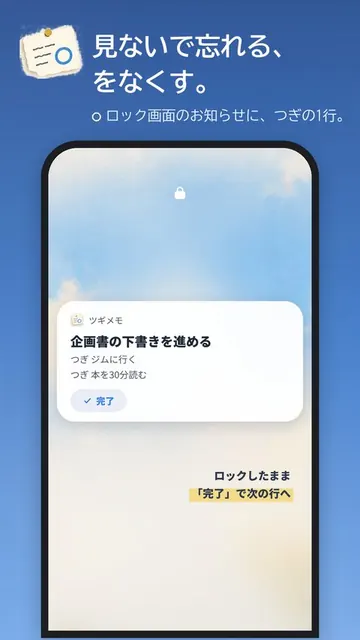
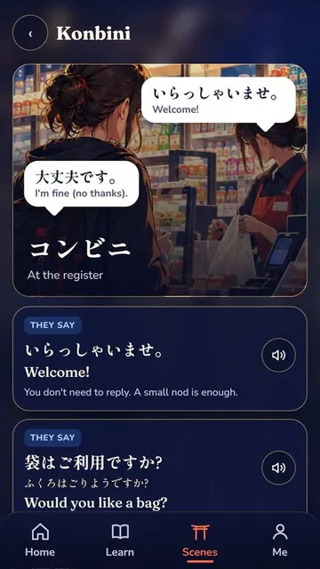
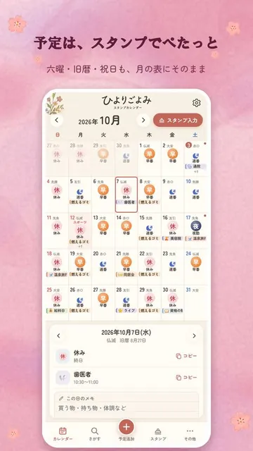
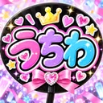
Google Play で一般公開するには、12人に14日間入れておいてもらうテストが必要です。いま人数が足りないのは、かんじさん・アトグラ・ハカドリ・ねかせどきの4本です。相互テストも歓迎です。
YURU Studio のアプリを作っています。ふだんは社内SEとして働いているエンジニアです。仕事の合間や空いた時間に、1人でスマホアプリとゲームを作っています。
作っているのは、国家試験の過去問「ニガテ帳」、野球の監督ゲーム「DIAMOND NINE」、古文単語の「こぶんめくり」、収支ノートの「カチマケ」、ブラウザで遊べる「らくがき運動会」「ハルの冒険」などです。
新しいアプリの話は X で書いています。
X で @apkderete を見る